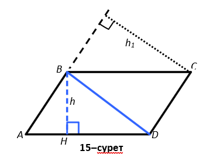

Параллелограмм ауданы
Параллелограмм мен ауданын табу үшін, формуланы шығарудың идеясы келесідей болады.Сондықтан, олардың әрқайсысы диагональмен екі үшбұрышқа бөлінеді. Осы үшбұрыштардың аудандарының қосындысы бізге параллелограмм мен трапецияның ауданын береді.
Үшбұрыштағыдай, параллелограмның биіктігі жүргізілген қабырғасын оның табаны деп атаймыз.
1-теорема (параллелограмның ауданы туралы). Параллелограмның ауданы оның табанымен биіктігінің көбейтіндісіне тең.
Берілгені: ABCD – параллелограмм (15-сурет), AD=a – табаны, BH┴AD, BH=h – биіктігі.
Дәлелдеу керек:S(ABCD)=ah
Дәлелдеуі. BD диагоналы параллелограмды тең екі ABD және BDC үшбұрышына бөледі. Бұдан, S (ABCD)=2S (ABD)
Параллелограмның BH биіктігі ABD үшбұрышының биіктігі болады, сонымен қатар параллелограмның AD табаны ABD үшбұрышының табаны болады. Яғни, S(ABD) = 1⁄2 ah. Бұл өрнекті алдыңғы теңдікке қойып: S(ABCD) = ah екендігін аламыз. Теорема дәлелденді. Ескерту. Параллелограмның табаны ретінде оның кез келген қабырғасын алуға болады. Ауданын табу үшін нақты 0осы қабырғаға жүргізілген биіктікті таңдау керек. Сондықтан, егер параллелограмның AB қабырғасына жүргізілген биіктігінің ұзындығы h1 болса, онда S(ABCD)=AB*h1 (15-сурет). Мысалы. Сүйір бұрышы 30° ромбыға іштей шеңбер сызылған. Шеңбердің радиусы r . Ромбының ауданын табыңдар. Берілгені: ABCD – ромб (16–сурет), ∠A=30°, r – оған іштей сызылған шеңбердің радиусы. Табу керек: S(ABCD). Шешуі. Ромбтың биіктігі оған іштей сызылған шеңбердің диаметріне тең (түсіндіріңдер). Ромбының BK биіктігін жүргізейік. Онда, BK=2r. ABK тікбұрышты үшбұрышынан ромбының қабырғасын табамыз:AB=2BK, BK – 30° бұрышқа қарсы жатқан катет. Бұдан, AB=4r. Демек, AD=4r. Ромбының ізделінді ауданын табу қалды. S=(ABCD)= AD*BK=4r-2r=8r2. Жауабы:S(ABCD)=8r2